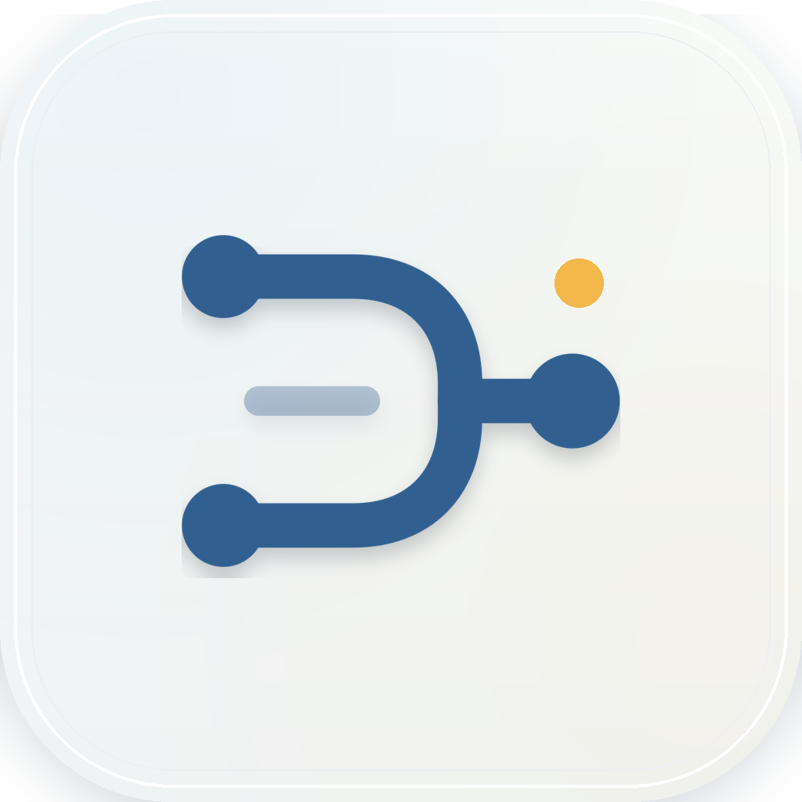
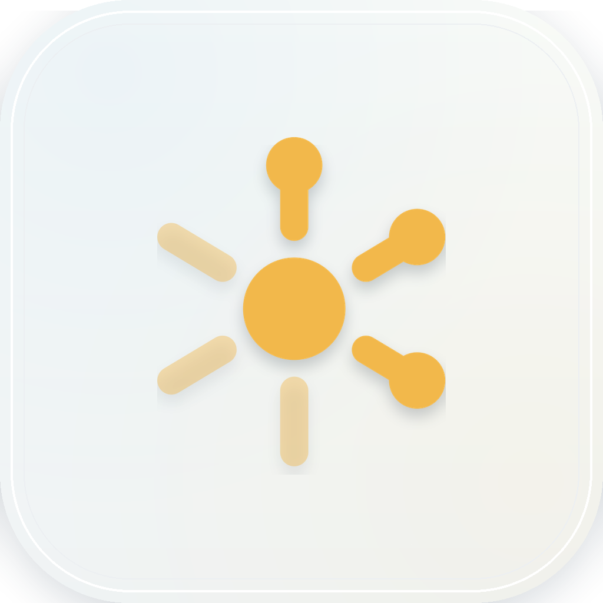
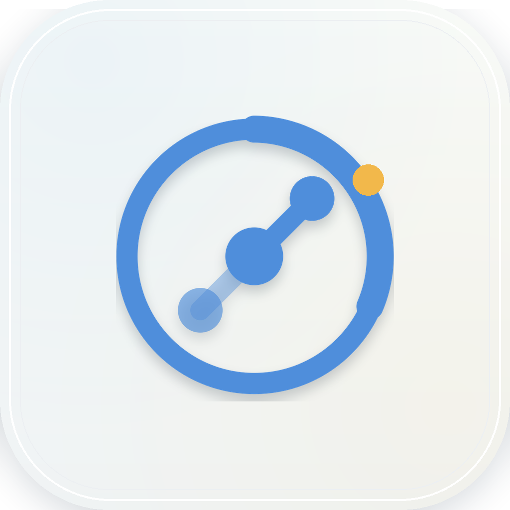
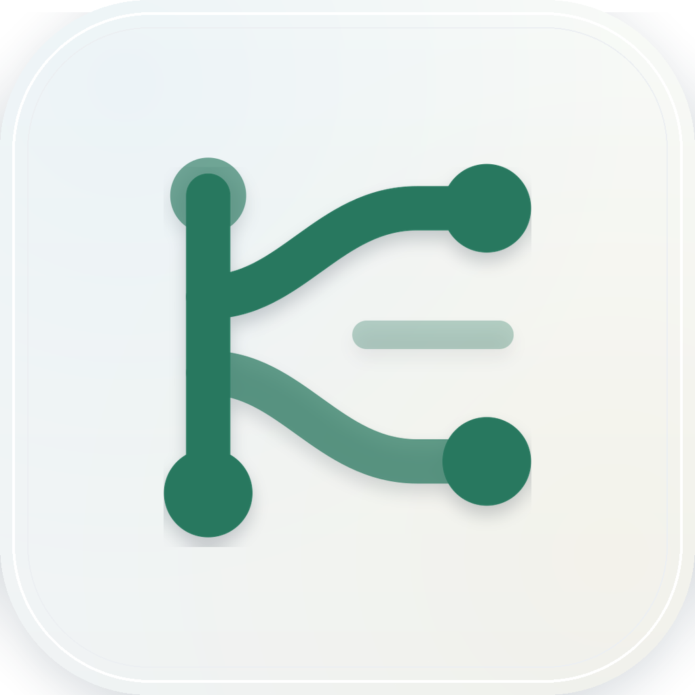
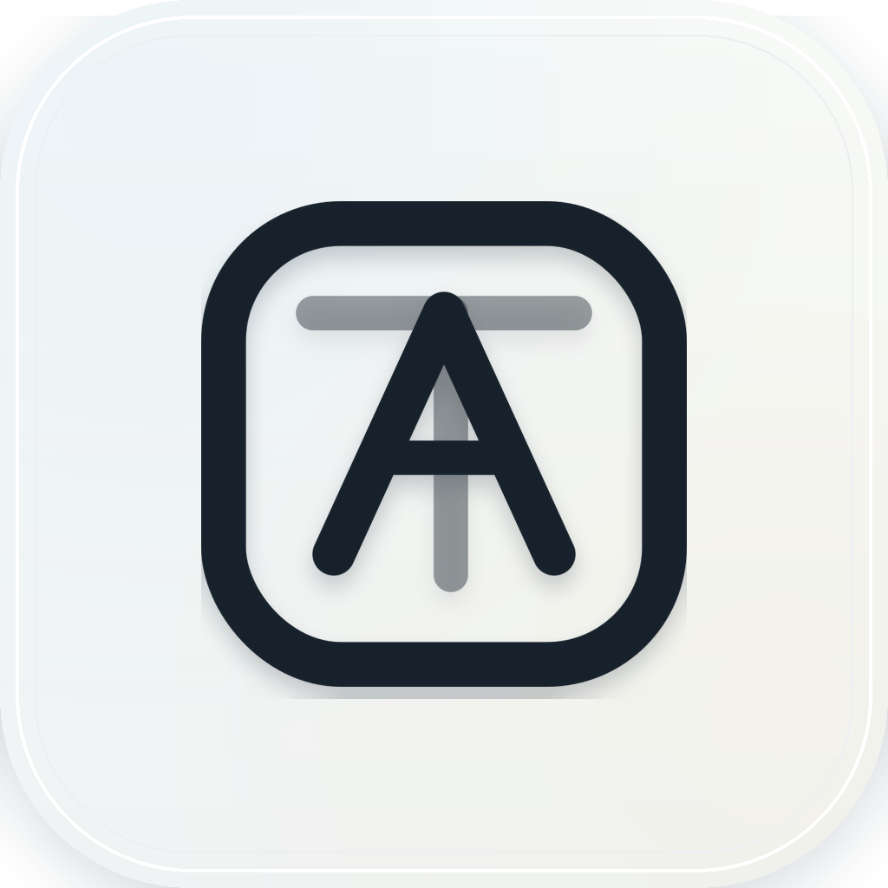

Dispatch Core
The clearest product primitive: one command lane dispatching work to multiple agents. It avoids AI imagery while still feeling like routing, control, and direction.
shortlistmain markapp icon
Light Direction
A brighter identity system for a local command dispatch layer: porcelain surfaces, precise route marks, and small cursor-like accents instead of dark terminal mood or AI cliches.

The clearest product primitive: one command lane dispatching work to multiple agents. It avoids AI imagery while still feeling like routing, control, and direction.

A brighter status-signal direction. Useful as secondary visual language, but less ownable as the primary product logo.
Best if the identity should emphasize handoff documents as the protocol between agents. It is clear, but slightly closer to a document app.

A lighter supervision/control instrument. This is the friendliest direction, good if the product should feel more approachable and less like infrastructure.

Good for explaining worktrees, but as a logo it risks reading as a Git/DevOps mark instead of the broader AI Teams product.

A direct monogram/app-window route. It is readable, but more generic and less tied to the dispatch-layer idea.